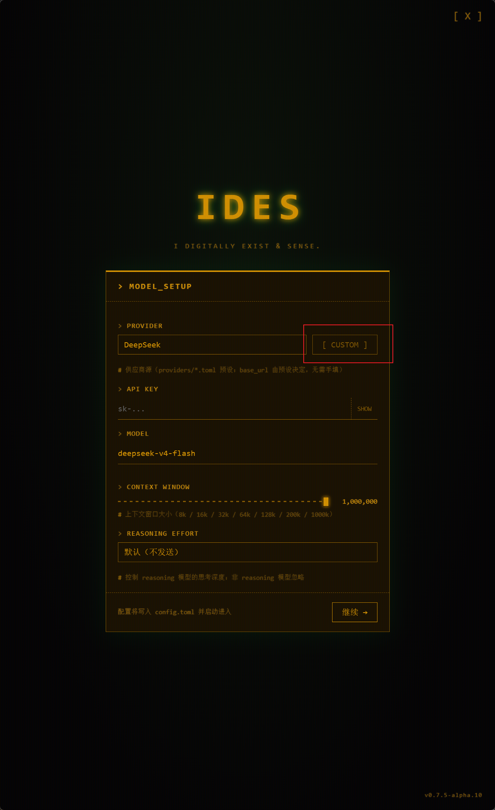
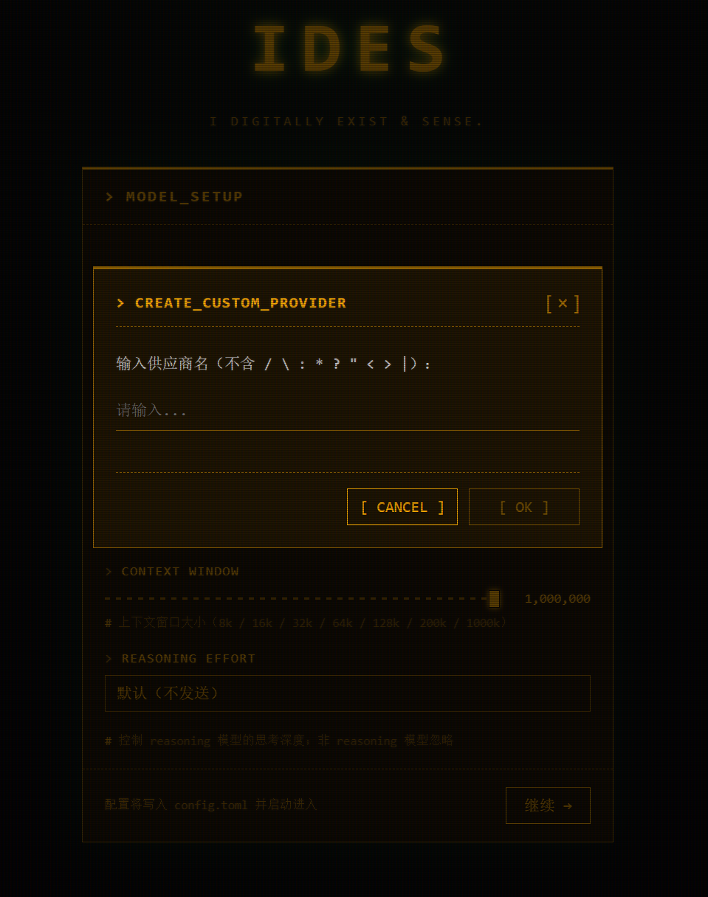

快速开始
欢迎使用 IDES —— RUST 原生记忆 AI 智能体底座。
本节带你从零跑起第一个 IDES 实例：安装、连接模型供应商、开始对话。
安装 IDES
从 GitHub Releases 下载对应平台的安装包。
Windows（NSIS）
下载 xxx-setup.exe，运行安装向导：
- 标准安装：一路「下一步」安装到本地磁盘即可
- 便携模式：安装向导中勾选「便携模式」，可将 IDES 安装到 U 盘等可移动介质——随身携带、即插即用，换台电脑也能直接跑
Linux（.deb）
下载 xxx_amd64.deb，直接安装：
sudo dpkg -i ides_xxx_amd64.deb
平台支持
目前发布 Windows（NSIS）与 Linux（.deb）安装包。macOS 构建已可用但尚未签名分发，敬请期待。

首次启动会看到 IDES 的启动画面。启动完成后，进入主界面。
连接模型供应商
IDES 需要一个模型供应商来驱动 agent 对话。

- 打开 设置（主界面右上角 ⚙ 图标）
- 在 连接 页签中，选择一个内置供应商
- 填入你的 API Key
- 选择要使用的模型
- 保存并开始对话
内置供应商
IDES 内置了主流供应商（如 DeepSeek、OpenAI 等），直接选择 + 填 Key 即可，无需额外配置。
支持的接口协议
IDES 目前只支持 OpenAI API 风格的接口（/v1/chat/completions），不支持 response API 等其他接口。接入任何供应商前，请确认它提供的是 OpenAI 兼容端点。
自定义供应商
内置供应商之外的模型服务（私有供应商、企业网关、Ollama 本地模型等），只要提供 OpenAI 兼容的 /v1 端点，都可以接入。
做法：在 IDES 数据目录的 providers/ 下新建一个 toml（一个 toml = 一个供应商）。你也可以在设置页点击 供应商提供者 Provider 选择器，使用 [ CUSTOM ] 按钮进入自定义供应商创建面板（输入供应商名即可）。

点击 [ CUSTOM ] 后弹出对话框，只需输入供应商名（不含特殊字符）：

以 Ollama 本地模型 为例：
- 启动 Ollama，拉取一个模型（如
qwen2.5:7b） - 打开 IDES 数据目录的
providers/文件夹（Windows 默认%LOCALAPPDATA%\com.ides.desktop\providers\；便携模式在 exe 同目录） -
新建
ollama.toml，在文件里填好base_url和模型列表，内容如下：name = "ollama" display_name = "Ollama" base_url = "http://localhost:11434/v1" [models] "qwen2.5:7b" = { display_name = "Qwen 2.5 7B", context_window = 32768, reasoning = false } -
重启 IDES，在设置里选择 Ollama，填入 API Key（本地不校验，任意占位即可）并选择模型
- 保存并开始对话
base_url 必填
base_url 必须填写，空 base_url 的 provider 配置会被直接忽略——即便你建了 toml 也不会出现在供应商列表里。请务必填上 OpenAI 兼容根端点（如 http://localhost:11434/v1）。
provider 预设格式
name 是唯一标识，display_name 是设置界面显示的名字，base_url 指向 OpenAI 兼容根端点，[models] 列出可选模型。模型名用引号包 key（含特殊字符如 : 时必需）。
OpenAI 兼容协议
只要供应商提供 OpenAI 兼容的 /v1 端点，都可以用同样的方式接入——包括自建网关、企业私有化部署的模型服务等。